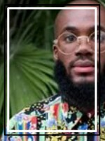

Список авторов учавствующих в выставке.
Сергей Гуреев — художник-авангардист, один из лидеров современного литовского авангарда, писатель и просто хороший человек.
Анна Хаматова— художник--реставратор, решила представить миру свою коллекцию работ, которые она создала в свободное от работы время.
Елена Красницкая— художница из горада Минска, дизайнер-одежды, решила попробовать себя в сфере живописи и поделится своим творчеством.
Артур Конников — художник-сюрреалист, член союза художников Республики Беларусь. В свободное от работы время ходит на вёслах по реке Припять.
Мара Хатачурян — художник-футурист, работает в сфере оформления фантастической литературы, любит котиков.
Лиза Врублесски — фото-художник журнала "Мэддисон", любит смотреть мелодраммы и кино про средневековую эпоху.
Тамара и Руслан Смешковы— семейная чета художников, потомственные художники из рода художников, у которых даже пра-пра-пра бабушка с душкой рисовали фикусы при дворе Князя Мышкина.В свободное от работы время подрабатывают в сфере критики худодественных произведений.
Антонио Де Пальма— испаннский художник-оформитель театральных декораций, в свободное время пишет футуристические портреты актёров и актрисс.
Марта Санчес— художник-авангардист из Мексики, работает в сфере оформления экстерьеров зданий, в свободное время любит выпить одну-другую чашечку кофе в каком-нибудь интерессном коффетерии.
Саманта Леруи — художник, модель, в свободное время от подиума любит почитать Шекспира.
Любовь Шупшина— художник, работающая в стиле "ню" и пезаж, считает импрессионистов Франции, примером для подрожания и вдохновляется их работами. В свободное время любит прыгать с высоких сооружений.
Муса Катасари - художник из Намибии, работает в стиле авнгарда, преподаёт в школе искусств родного горада.
Сиу Реманай — художник-футурист из Монголии, работает дизайнером в журнале "Сюрикен", в свободное от работы время любит скачки в степях.
Халиб Аль Севан — художник-авангардист из Марокко, пишет в свободное от работы время, потому что в Бухаре его не хотят нанимать на реставрационные работы отделки зданий с шилдочкой Историческая ценность.
Огюст Релебье — художник-скульптор из города Леон, Франция, в свободное от работы время играет в "Го" в китайском квартале своего города.
Рана Харишпабури — художник из солнечной Индии, в свободное время от преподавания в школе искусств пишет яркие картины в стиле этно.
Энрике Самарроз - португальский художник-музыкант, в свободное от работы время любит гулять по окружающей местности и наблюдать естество городского движения и энергии современного гтрода.
Дана Миронова — художник-гриммер, в свободное от основной работы на телевиденье занимается графикой.
Дарья Серцова — художник-иллюстратор, обажает детективы и приключения, соответственно и творчество посвященно данной тематике.
Ангелина Кегебешкина— художник-натуралист, в свободное от работы время любит писать обнажённых зверюшек, которых любят одевать в разные наряды сотрудники Школы с Цирковым уклоном.
Сьюзи Бруннески— художник-авангардист из Канады, работает тур-оператором в местном агенстве путешествий, пишет в свободное время в стиле конструктивизма и поп-арта.
Маннуэль Сида — художник иллюстратор и арт-дирректор некоторых интернет изданий Бруклина Нью-Йорк, в свободное время пишет картины в жанре "ню".
Мари Пасталь — художник из города Дублин Ирландия, любит писать картины на антивоенную тематику, временно неработает, так как решила попутешествовать по миру.
Саманта Ривьера — художник-дизайнер из Ю.А.Р., в свободное время от разработки интерфейсов для операционгого програмного обеспечения на местном засекреченном предприятии по созданию робототехники пишет живописные работы на футуристическую тематику, затрагивающие проблемы экологии и нарушения человеком природной гармонии.
Пьер Сизан— художник-шаржист из Бельгии, в свободное от работы время занимается живописью, любит экстремальные виды спорта.
Жанна Гулякова — художник, в свободное время от работы в отделе кадров Ковровского завода, пишет художественные работы на тематику постапокалипсиса.
Екатерина Гузкина— художник, в свободное время от работы над комиксами в стиле "манга" занимается написанием полотен в стиле ню на фэнтезийные тематики.
Крестофф Майнштейн — художник-авангардист, из Индии, где в свободное отмедитаций время занимается изучением местного этноса и написанием художественных работ на тематику духовного познания мира.
Александр Волгов — художник, журналист, писатель, готов представить свои лучшие работы.
 Луиза Бромменталь — художник из Англии, орнаменталист, своё творчество называет этно-футуризмом.
Луиза Бромменталь — художник из Англии, орнаменталист, своё творчество называет этно-футуризмом.
Все участники выставки вымышленные персонажи, созданные для наполнения контентом данного веб-сайта, любые совпадения имён и лиц с реальными людьми являются чистой случайностью, в связи с чем претензии, направленные автору не рассматриваются. Обращаю внимание бутаперчевых мозго*бов, что данные три страницы не используются в коммерческих целях!